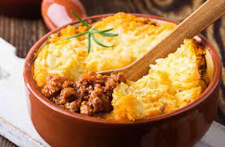

Pastel de Papa

Este se lleva 10 Ricardos yuziuks
Ingredientes
- 1 k de papas
- ½ k de carne picada de ternera
- 1 cebolla
- 1/2 pimiento morrón
- 2 dientes de ajo
- 1 cubito de caldo
- ajo en polvo
- pimentón
- 25 g de manteca
- 1 chorrito de leche
- nuez moscada
- aceite
- sal
- pimienta
Pasos de la receta
- Cortar las papas en cubos y ponerlas a hervir con sal.
- Picar la cebolla, el ajo y el pimiento morrón.
- Calentar el aceite en una olla o sartén y sofreir la cebolla, el pimiento y los ajos.
- Cuando la cebolla está transparente, agregar la carne y sofreirla mientras se deshace con una cuchara.
- Salpimentar, agregar el cubito de caldo, el ajo en polvo, el pimentón y cocer la carne unos 15 minutos.
- Una vez que las papas estén hervidas, hacer en caliente un puré con la manteca y la leche. Salpimentar.
- Poner en una fuente para horno una base de puré, agregar por encima el resto del relleno (la carne),
dejar que se entibie un poco y colocar otra capa de puré. Para distribuirlo, se moja la cuchara en agua fría.
- Llevar a horno fuerte unos 15 a 20 minutos, o hasta que la parte de arriba esté crocante.
- Puede agregarse al relleno de carne huevos picados, olivas verdes picadas o pasas de uva.
Volver a la pagina principal